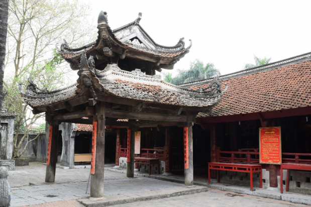
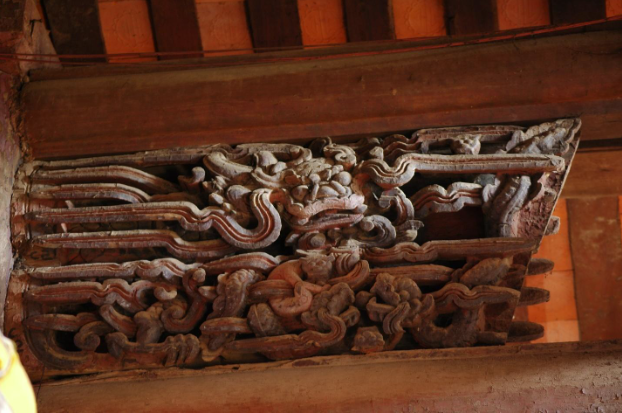

Đền Phù Đổng: Dựng xây công trình – Gìn giữ giá trị di sản
Đền Phù Đổng là một trong những di tích lịch sử nổi tiếng bậc nhất tại Hà Nội, gắn liền với truyền thuyết Thánh Gióng – vị anh hùng dân tộc đánh giặc Ân cứu nước. Dự án tu bổ, tôn tạo Đền Phù Đổng do Công ty Cổ phần Nguyễn An thực hiện đã góp phần gìn giữ, phát huy giá trị văn hóa, tâm linh và lịch sử của dân tộc.
Mỗi công trình, dự án được Công ty Nguyễn An tham gia thực hiện đều được các chuyên viên của chúng tôi coi như những công trình khoa học. Mọi luận cứ, giải pháp của chúng tôi đưa ra đều được cân nhắc, tham vấn dựa trên các bước triển khai thận trọng từ các khâu khảo sát hiện trạng, nghiên cứu sự biến đổi, bổ sung hoặc thay thế trong quá trình tồn tại của công trình.
“ Bảo tồn di sản là gìn giữ hồn cốt dân tộc cho muôn đời sau. ”
Đền Phù Đổng
- Đền Phù Đổng – Xã Phù Đổng – TP Hà Nội là 1 ngôi đền lớn, nổi tiếng ở Miền Bắc nói riêng và Việt Nam nói chung. Là nơi gắn liền với sự tích Thánh Gióng đánh giặc, Đền là nơi thờ tại quê hương Thánh Gióng theo truyền thuyết. Cùng với Tản Viên Sơn Thánh, Chử Đạo Tổ và Thánh Mẫu Liễu Hạnh ( Trước đây là Thiền sư Từ Đạo Hạnh ) là Tứ bất tử trong tâm thức người Việt. Do đó cùng với Đền Sóc thì đền Gióng ( tức đền Phù Đổng) là những di tích rất quan trọng gắn liền với truyền thống đánh giặc giữ nước của dân tộc mà đại diện ở đây là Thánh Gióng.
- Các triều đại từ trước đến nay ở Việt Nam đều rất coi trọng việc bảo vệ cương thổ quốc gia. Do đó việc xây dựng, gìn giữ, tu bổ, tôn tạo các công trình kiến trúc gắn với các vị thần, tướng có công với dân, với nước luôn luôn được coi trọng. Đền Gióng cũng nằm trong ý thức hệ đó.
- Đền Gióng ở ven đê Sông Đuống, nằm trong cụm các Di tích có liên quan đến Thánh Gióng như Đền Mẫu là nơi sinh Thánh, Đình Hạ Mã là nơi các quan viên đến Tế Thánh thì xuống ngựa, Thủy đình là nơi ngắm cảnh, biểu diễn….
Từ đê sông Đuống
Từ đê sông Đuống nhìn xuống ta sẽ thấy 1 ngôi Thủy đình tuy quy mô khá khiêm tốn nhưng tỉ lệ chung rất đẹp, hòa hợp với không gian xung quanh như hồ nước, dốc xuống Đền, gốc Đa. Thủy đình được kiến tạo từ thời Lê trung hung vào nửa cuối Tk 18, quy mô 2 tầng 8 mái đao cong. Toàn bộ Thủy đình được làm từ gỗ Lim Thanh Hóa, được điêu khắc cầu kỳ, tinh xảo ở hầu khắc các cấu kiện như kẻ bẩy, chống bẩy, ván dong, xà đùi…Thủy đình đứng trên 1 nền cao hơn mặt nước hồ, có đường dẫn vào bờ xây bằng gạch cuốn vòm.
Phía sau Thủy Đình là Sân Đền, nổi bật với Ngũ Môn Quan được xây bằng gạch không trát vào thời Nguyễn. Phía trên 3 cổng chính của Ngũ Môn được kiến tạo bằng 1 tòa lầu gác 2 tầng 8 mái bằng gạch có xây trát, 3 vòm cuốn trong đó vòm giữa để thông, 2 vòm 2 bên được biến đổi thành cửa thông gió. Cả 5 cửa của Đền đều được lắp hệ cửa bức bàn theo lối Thượng song hạ bản. Ngày thường chỉ mở 1 cửa bên, chỉ đến khi Đại Đám mới mở toàn bộ cửa. 2 bên lầu Ngũ Môn được kiến tạo 2 trụ biểu cũng bằng gạch xây không trát.

Phía sau tòa Phương Đình là tòa Tiền Bái được dựng từ thời Lê trung hung. Về cơ bản tòa nhà này có kết cấu đơn giản theo hình thức thượng chồng rường hạ kẻ bẩy, hầu như bào trơn đóng bén ít hoa văn họa tiết, Quy mô tòa tiền bái 5 gian 2 chái mái đao cong. Dọc 2 bên là 2 nhà Tả Hữu theo hình thức tường hồi bít đốc. Đáng lưu ý ở tòa Tiền Bái là hàng lan can bao xung quanh vốn hay gặp ở các ngôi Đình thời Lê trung hưng về trước.
Phía sau tòa tiền bái là tòa Trung Bái. Đây là tòa nhà được điêu khắc cầu kỳ nhất của cả công trình, với các mảng chạm được thể hiện ở trên các cánh gà và các vì nách. Đề tài điêu khắc đa dạng, phong phú thể hiện tính dân gian gần gũi, mang đặc trưng điêu khắc gian đoạn nửa sau tk 17. Các đề tài ở đây đa phần là hình Rồng, Ngê, mây mác đặc trưng

Sau tòa trung tế là tòa hậu cung cũng mang phong cách nghệ thuật của giai đoạn nửa cuối Tk 17. Đáng chú ý ở đây là phần vách gian trái phía trước được đục chạm các hoa văn dân gian như Rồng, Phượng, Nghê. Nét chạm tuy thô vụng nhưng khỏe khoắn, phá cách tạo thành 1 góc nhìn mới về nghệ thuật thời Lê trung hưng. Đáng chú ý ở bó thềm còn sót lại vài viên gạch in hình Rồng mang phong cách nghệ thuật của Tk 17.
Mặc dù trải qua hàng trăm năm tồn tại, nhưng nhờ có sự quan tâm của chính quyền và các tầng lớp nhân dân nên cho đến nay, Đền Phù Đổng luôn luôn được tu bổ, tôn tạo và phát triển, gắn bó với nhân dân địa phương nói riêng và người Việt nói chung, Chính vì lẽ đó, cụm di tích Đền chùa Phù Đổng đã được Nhà nước xếp hạng Di Tích Quốc Gia đặc biệt. Lễ Hội Gióng cũng được công nhận là di sản Phi vật thể đại diện của nhân loại.
Bài & ảnh: Nguyễn An.,JSC